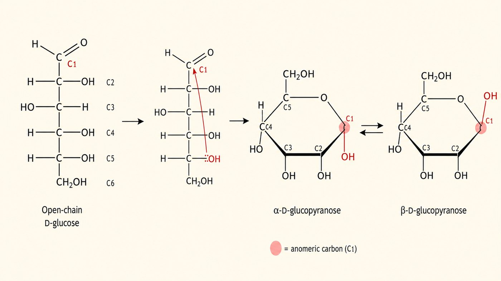
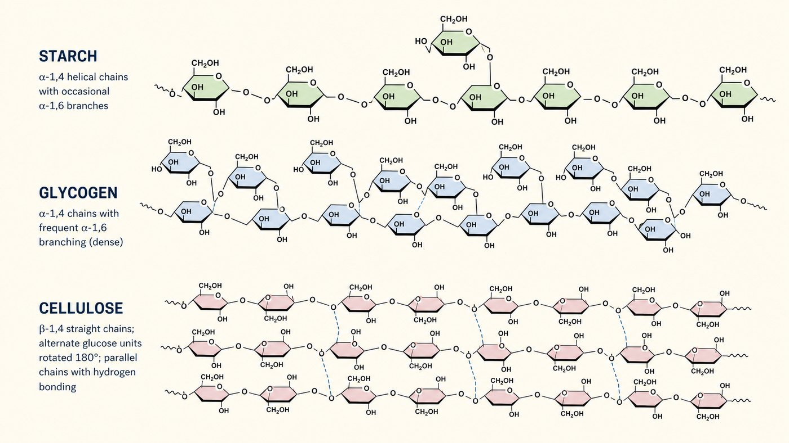

第 8 週
Carbohydrate
Đổi chủ đề
蛋白質。
7 tuần đầu: protein
能量。先講碳水化合物。
Từ nay: năng lượng
單體接成聚合物(第 1 週)。
氫鍵是分子間的力(第 2 週)。
Kiến thức cũ dùng hôm nay
Bẫy: 糖 vs 醣
吃起來甜的。
葡萄糖、蔗糖。
甜 = 糖
所有碳水化合物。
包含不甜的澱粉。
總稱 = 醣
澱粉是「醣」但不是「糖」(不甜)。越南語都是 carbohydrate,不用分。
Từ vựng · 不用背,看過就好
| 中文 | Tiếng Việt | English | 中文 | Tiếng Việt | English |
|---|---|---|---|---|---|
| 單醣 | Đường đơn (mono-) | Monosaccharide | 澱粉 | Tinh bột | Starch |
| 雙醣 | Đường đôi (di-) | Disaccharide | 肝醣 | Glycogen | Glycogen |
| 多醣 | Đường đa (poly-) | Polysaccharide | 纖維素 | Cellulose | Cellulose |
| 葡萄糖 | Glucose | Glucose | 異構物 | Đồng phân | Isomer |
| 醣苷鍵 | Liên kết glycosidic | Glycosidic bond | 還原糖 | Đường khử | Reducing sugar |
舊教材 glucid,新課綱 carbohydrate。蔗糖日常說 đường mía(砂糖)。
Dạng mạch hở và mạch vòng

在水裡大多是環狀。成環時 C1 的 OH 可以朝上或朝下。
朝上朝下 → α 和 β 兩種。看起來差一點點…
α và β: khác rất nhiều
接起來 → 澱粉。
能吃。
α → tinh bột (ăn được)
接起來 → 纖維素。
不能消化。
β → cellulose (không tiêu hóa)
Đơn → đôi → đa
| 雙醣 | 組成 | 例子 |
|---|---|---|
| 蔗糖 Sucrose | 葡萄糖 + 果糖 | 你家的砂糖 |
| 乳糖 Lactose | 葡萄糖 + 半乳糖 | 牛奶 |
| 麥芽糖 Maltose | 葡萄糖 + 葡萄糖 | 麥芽 |
用醣苷鍵接起來,脫一個水。(跟第 3 週胜肽鍵一樣)
3 loại polysaccharide
α,少分支。植物。
Tinh bột — thực vật
α,多分支。動物。
Glycogen — động vật
β,直鏈。骨架。
Cellulose — khung

Đừng nhầm tinh bột và glycogen
動物要「快速」放糖。
分支多 = 出口多。
Nhiều nhánh = nhả nhanh
植物澱粉,動物肝醣。
「肝」= gan。
肝醣 = ở gan
肝醣就是存在肝臟的。第 13 週會講怎麼把它拆開放糖。
Thức ăn của bạn
| 食物 | 是什麼 | 結果 |
|---|---|---|
| phở, bánh mì | 澱粉 | 消化成葡萄糖 → 能量 |
| 牛奶 | 乳糖 | 缺乳糖酶 → 肚子痛 |
| 蔬菜纖維 | 纖維素 | 消化不了,但幫助腸道 |
第 13 週的糖解。就是燒葡萄糖產能。
Bài tập: Phân loại
是單醣、雙醣、還是多醣? Đường đơn, đôi hay đa?
蔗糖
葡萄糖
澱粉
麥芽糖
Bài tập: Đúng hay sai
澱粉和肝醣。都是葡萄糖組成的。
α 和 β 葡萄糖是不同的分子式。
人可以消化纖維素。
肝醣的分支比澱粉多。
想一想:為什麼動物用肝醣。不用澱粉?(動物需要快)
下週 · Tuần sau
Thi giữa kỳ (Tuần 9)
▶ 範圍:第 1–8 週。含今天的碳水化合物
Phạm vi: tuần 1–8
▶ 題型:標圖 40%、配對 20%、選擇 20%、計算 20%
Dạng đề: ghi nhãn, nối, chọn, tính
▶ 考完第 10 週接脂質與生物膜
Tuần 10: lipid và màng sinh học